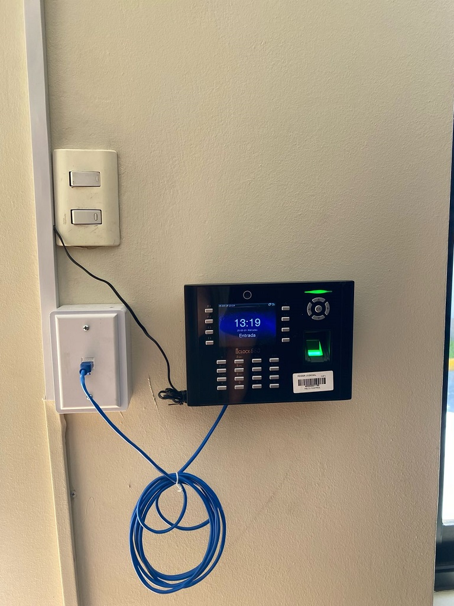

Copiapó, 19 de marzo de 2025 – En el marco de las iniciativas de modernización y optimización de la gestión administrativa en el Poder Judicial, se llevó a cabo la instalación de un nuevo reloj control en la Ilustrísima Corte de Apelaciones de Copiapó.
La implementación de este sistema busca agilizar el registro de asistencia de los funcionarios, mejorando la precisión en los tiempos de gestión y la generación de reportes administrativos. Este avance marcará un antes y un después en la administración del recurso humano, permitiendo un monitoreo más eficiente y transparente de la jornada laboral.
Para la ejecución de este proyecto, que abarcará toda la jurisdicción, participaron el informático Daniel Caminada y, por parte del área de mantenimiento, Felipe Manquecoy, quienes fueron los encargados de la instalación y puesta en marcha del sistema en la Corte de Apelaciones, dando así inicio a este ambicioso plan de modernización.
"Este nuevo sistema permitirá optimizar los procesos administrativos y mejorar la eficiencia en la gestión del tiempo, beneficiando tanto a los funcionarios como a la administración judicial en su conjunto," destacaron los especialistas a cargo de la instalación.
El proyecto contempla la implementación progresiva de esta tecnología en los distintos tribunales de la jurisdicción, con el propósito de homogeneizar y digitalizar los registros de asistencia, asegurando un control más eficiente y una administración acorde a los desafíos de la transformación digital en el Poder Judicial.
Con esta iniciativa, la Corte de Apelaciones de Copiapó se posiciona a la vanguardia en la modernización de sus sistemas internos, garantizando herramientas tecnológicas que faciliten la labor diaria y contribuyan al fortalecimiento institucional del Poder Judicial.
